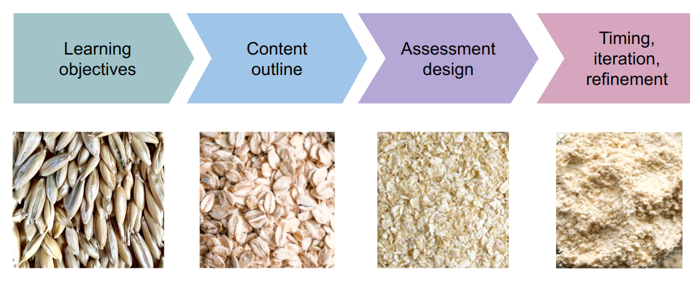
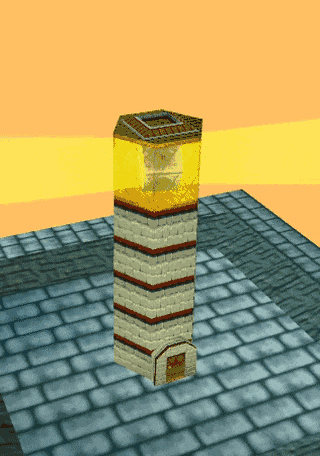
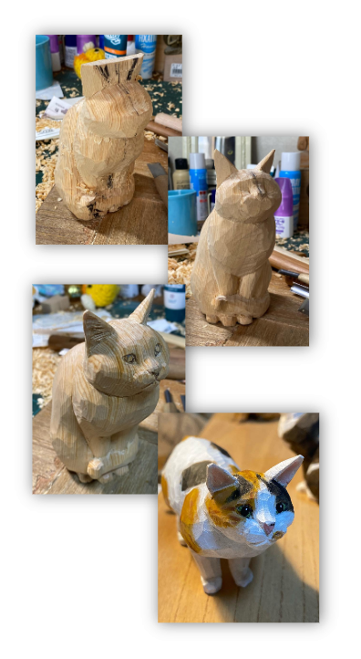
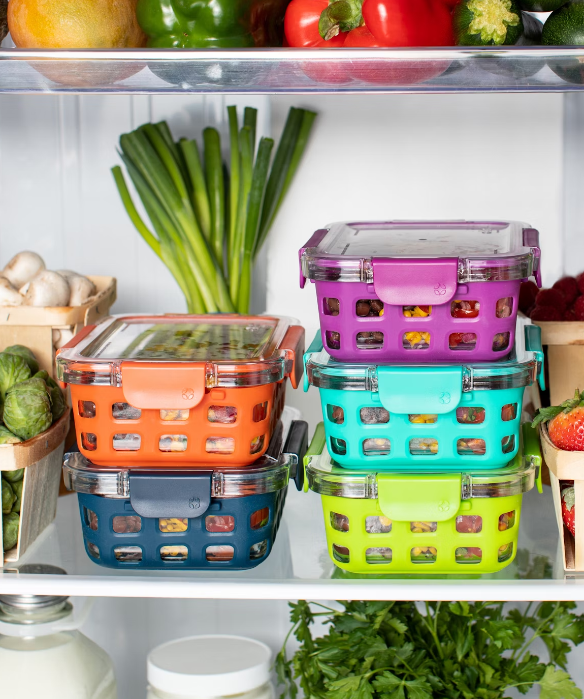

Tutorial Design#
This section will focus on designing and editing the intellectual content of your tutorial, with an eye towards the different contexts in which it will be used (synchronous and asynchronous).
Getting started#
Starting from scratch on any project can feel like a daunting task. To overcome “blank page syndrome,” we recommend the “backwards design” process in which we start by defining the core outcomes we hope for our audience to experience, and then refine to further detail from there. In the rest of this chapter, we’ll go into detail about each stage:
{kind=link}
This process is heavily inspired by the Software Carpentry Curriculum Development model for building learning content.
Important
A hackweek tutorial is learning-oriented and should guide participants through a step-wise process with a meaningful outcome.
Learning Goals#
{kind=link}
A tutorial’s learning goals are a set of succinctly stated objectives the audience is intended to achieve through their participation in the content. As tutorial authors, they serve as our guiding light to determine what content we need to produce and what content we can reasonably ignore.
Although there are many ways to articulate a lesson’s goals, we recommend the following structure to hold ourselves accountable later in the design process:
Write them as a bulleted list, with one goal per bullet.
Use a consistent format for each goal’s phrasing. For example, state each goal as a single sentence that begins with “Students will be able to…”
Expect to achieve 2-3 goals per 50 minutes of synchronous tutorial time
Make goals concrete enough to be measurable using some sort of interactive activity. It doesn’t matter whether you actually have time for said activities or not – just know that if you can’t articulate an activity to measure a goal, it is likely too general.
Note
Learning goals primarily describe the outcome of the synchronous time spent during tutorial delivery (as opposed to what participants will gain throughout the week when using your material as a reference).
Here is a set of example learning goals for a 45-minute workshop on API requests:
“API requests with Python” Learning Goals
Understand foundational HTTP API concepts
Use the Python “requests” library to perform API requests
Understand the complexities beyond basic operations and how to learn more
Continuing this example, here are some examples of how we might assess each goal:
“API requests with Python” Learning Goals (With assessments)
Understand foundational HTTP API concepts
Match HTTP verbs to concrete use cases for a hypothetical API
Structure an example query as a URL and also as JSON
Use the Python “requests” library to perform API requests
Run example python code that performs an API get. Duplicate python code and modify it to GET from another API
Understand the resources available to learn more about APIs
Activity: Assign each participant to read one of the pages from the REST cookbook. Then, split into breakout groups composed of folks who read different pages. Have them summarize for each other.
Warning
Note that while it’s important to be able to describe each learning goal in terms of an assessment activity to test it, it’s not important we actually do that activity during the synchronous tutorial session. Time is limited, and it’s likely we’ll be able to teach each of our goals without being able to test them. Not having time for a goal’s associated activity doesn’t mean the whole topic should be cut from the lesson plan! The main intent behind this assessment guideline is to keep our goals concrete.
Content Outline#
{kind=link}
Using our learning goals as a framing device, we can write an outline describing the intellectual content needed to achieve those desired outcomes. The outline takes the form of a longer bullet list that tersely expresses “everything you need to know” about the topic of the tutorial, roughly in the order it will be covered during synchronous lesson time. Sub-bullets in the list get to increasing levels of detail.
The outline is our key tool for being able to keep track of varying levels of detail throughout the rest of the design process, though it also serves several other uses:
Discussing content amongst the teaching team
Understanding the narrative arc of the intellectual information
Adjusting “air time” given to any given topic
Identifying logical gaps that need to be filled in
Just getting started!
Although tutorial outlines don’t necessarily use their learning goals as the top-level bullet points, it’s often a good way to get started.
Example outline
Feeding yourself: a workshop for new college students
Students will be able to find ingredients
Selecting a grocery store
Trader Joes vs. Whole Foods vs. Safeway
Pricing differences
Specialty ingredients and “absolute needs”
Finding ingredients
Search by aisle
Bulk bins
Shelf stable vs refrigerated (eg, pickles)
Checkout
Cashier
Self checkout • PLU codes • Barcode scanning • By weight
Students will be able to make a sandwich
Getting out ingredients
Identify minimum ingredient set by recipe, put on counter
Remove portion of refrigerated ingredients you need, put rest back in fridge
Assembly
Plating
Students will be able to store left-over food
Tupperware
Fridge vs. shelf
Lifetimes
Cat sculpture photo courtesy of artist Ryoji Bannai
Interactivity and Assessment#
Once the tutorial has been outlined, instructive bullets can be punctuated with bullets describing participant activities. Activities can serve a variety of different purposes: - During synchronous time, they engage the audience and help maintain attention - They provide a way for participants to self-assess their mastery of the material - They provide opportunities for participants to help each other, which builds community and strengthens understanding through peer teaching. - They provide opportunities for structured practice of the material, which through repetition improves retention.
Note
💡 Lessons learned from previous hackweeks
Not all interactivity has to be structured. Leave some space when you are not talking for people to work through examples and ask questions.
Some activity suggestions are outlined below, depending on the ultimate intent of the activity at a given point in our outline.
Attentional activities#
To maintain participant engagement during long days, it can be very helpful to provide forms of interactivity that don’t assess a skill, but rather just have folks switch from a ‘student’ mode to ‘participant’ mode.
A common attentional activity is to ask participants to respond to a creative prompt, observing the following guidelines:
Ask for written responses through slack or zoom chat, or platforms like particify
Give adequate time for shy folks to write their responses. One way to solicit them is to ask people to type their responses and hold back from posting them until you do a countdown and say “go!”.
Read back some responses out loud
It’s important to not ask comprehension or mastery questions, like “describe back to me what I just said” or “we’re about to talk about XYZ. can someone tell me what XYZ is”. Rather, try questions like these:
Ask for reflections on past experience
Ask participants to brainstorm as many unique responses as possible
Ask for participants’ opinions on or “favorites of” a given subject
Conceptual activities#
For non-technical material, several techniques are described in this active learning strategies guide and summarized in this chart:
![A chart of active learning strategies on a spectrum from "Simple" to "Complex". Starting from the simplest to the most complex: Pause for reflection, Writing (Minute Paper), Self-assessment, Large Group Discussion, Think-Pair-Share, Informal Groups, Triad Groups, Group Evaluatoins, Peer Review, Brainstorming, Case Studies, Hands-on Technology, Interactive Lecture, Active Review Sessions (Games or Simulations), Role playing, Jigsaw Discussion, Inquiry Learning, Experiential Learning (site visits), Forum Theater](../../_images/tutorials-active-learning-strategies.png)
Technical activities#
For technical material, here are some suggestions:
Material involving data access
Repeat a procedure you just modeled
Find and share an interesting datapoint/dataset/layer
Material involving coding techniques
Fill-in-the-blanks
Reading pre-written code for comprehension
Tweak pre-written code behavior
Parsons problems (arranging scrambled lines of code)
Timing and refinement#
Once we’ve built out content for our tutorial, it’s important to run through it once or twice to get a sense of how much time each section takes. Although it’s helpful to do this in front of colleagues and solicit feedback, even just doing a dry run alone at your desk with a stopwatch can give critical understanding as to how well your material flows and how much content you may need to edit.
Editing#
More often than not, most tutorial topics will have far more content to cover than can reasonably fit in a single tutorial session. It is tempting to try to crunch as much of it as possible into the synchronous time we have together, but it’s important to keep a realistic view of how the tutorial’s timing and pacing. No matter what we want to share, there is a limit to what attendees will reasonably be able to absorb in a single session. Even more importantly, trying to push past that limit will negatively affect the learning goals we do have time to cover.
To that point, here are some tools to help make the most out of the time you have.
Content prioritization#
Once you have a content outline, try going through the bullet points and categorizing them with the following labels as they relate to the tutorial’s learning goals:
Important 🤯: What folks absolutely need to know about the topic to engage with it later in the day.
Useful 👍: What folks should know by the time they leave the hackweek.
Reference 📖: What folks should know eventually, if they continue to engage with the topic beyond their hackweek project.
We will try to include important 🤯 and useful 👍 content in our tutorial’s jupyter notebook. During our synchronous sessions we’ll cover the important 🤯 content, and point participants towards the useful 👍 content for later.
As for the reference 📖 content, we will remove it from our tutorial’s jupyter notebook and move it into a separate notebook linked to at the bottom of the document.
Note
💡 Lessons learned from previous hackweeks
Keep it simple and brief! Hackweeks have a lot going on, and between tutorials, networking events, and projects there is a lot for participants to digest.
Ultimately, this is a learning-oriented framing of our tutorial content that prioritizes content in the context of a greater ecosystem of materials, which builds on the prior work of [13]:

Layering difficulty#
Hackweek audiences usually bring together folks with a broad range of prior experiences and confidence levels. To make tutorials accessible it’s important to gear synchronous instruction towards relative newcomers, while also considering ways to provide value to the more senior practitioners in the audience.
One approach is to prioritize content during synchronous instruction that is broad in scope, giving an initial picture of what might be possible when applying a particular data science tool. Then, break out out to small group activities that offer opportunities for multiple levels of challenge:
Groups composed mostly of newcomers can focus on mastering the presented content
Experienced groups can face more specific challenges or discuss topics as they relate to their own experience
Groups of mixed experience offer the opportunity for peer instruction, where more experienced participants mentor the less experienced ones.
Ultimately, the idea is to start with simple explanations that attend to people who are seeing this content for the first time, AND keep advanced participants engaged by inviting them to assist others, or to explore more advanced concepts through individual study.
Keeping cut content for later#
{kind=link}
A psychological trick that can help when considering what material to flat-out remove from a tutorial and its notebook is to copy it into a separate document for use some time later. Whether or not you end up finding a use for it, keeping it around in some private location until the hackweek is done can make it easier to hit the delete button in the participant-facing jupyter notebook.
In this way, we can treat cut content like left-over ingredients from making a sandwich. When we end up with spare vegetables, we put them in separate tupperware containers, and then stack them in the fridge. Storing and preserving excess ingredients gets us ready to make future sandwiches, and reduces trips to both the grocery store and ER because of food poisoning!
Image courtesty of unsplash
References#
To dig a bit deeper on some general guidance on creating technical content for a hackweek, we recommend reviewing The Diátaxis Framework for documentation.
Note
While we’ve advocated for learning-oriented tutorials based on the Diátaxis Framework during a hackweek, keep in mind alternative approaches that might be a good fit depending on your goals: understanding-oriented, reference-oriented, and goal-oriented.
These are some other good references: